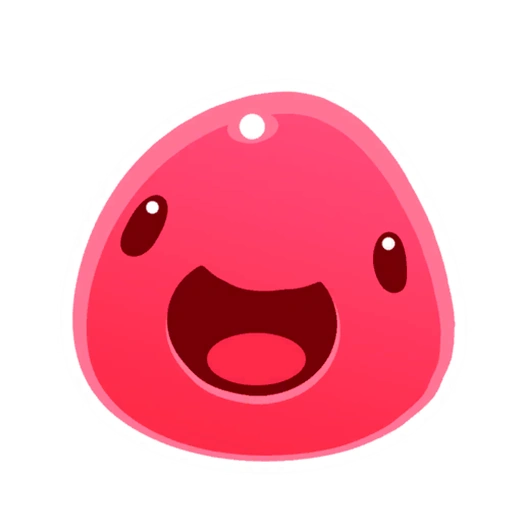
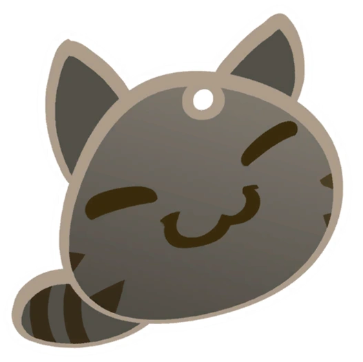
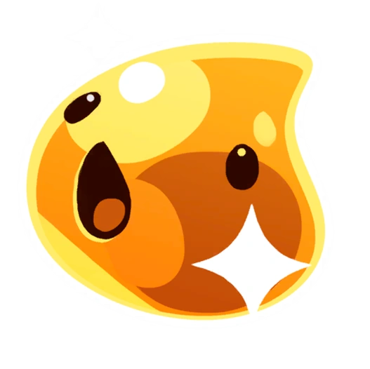

¡La Lejana pradera! Un lugar lleno de aventuras
En la lejana pradera encontrarás un sinfín de criaturas peculiares llamadas Slimes, unos seres redondos y saltarines, estos amiguitos te darán un producto muy valioso llamado Plorts, los podrás usar para comerciar y expandir tu negocio como un Rancher!!
Ver los SlimesHogar y Granja
Es un espacio de simulación donde los jugadores crían y alimentan slimes, cultivan recursos, mejoran el equipo Vacpack y venden Plorts para ganar dinero. El Rancho es el centro de operaciones y la base principal del jugador en el planeta Lejana, Lejana Pradera.
Los Slimes más famosos

Slime Rosa
Es la cara del juego y el primero que encuentras. Es famoso por ser el más común, fácil de cuidar y por su capacidad de comer cualquier cosa.

Slime Atigrado
Basado en un gato, es extremadamente popular en la comunidad debido a su ternura y comportamiento juguetón (como intentar dar cabezazos al ranchero o robar comida). Es considerado por muchos fans como el slime más carismático del juego.

Slime Dorado
Es el slime más legendario y raro de encontrar. Es famoso porque no se puede capturar; solo aparece de forma aleatoria y huye rápidamente, pero si logras golpearlo con un objeto, soltará valiosos plorts dorados que valen una fortuna en el mercado.
Más Información
Slime Rancher es una experiencia encantadora de mundo abierto en primera persona desarrollada y publicada por el estudio independiente Monomi Park. Desde su lanzamiento, ha cautivado a millones de jugadores con la historia de Beatrix LeBeau y sus aventuras en la "Lejana, Lejana Pradera".
¿Dónde comprar?
Puedes obtener tu copia de Slime Rancher en las siguientes plataformas oficiales:
- PC: Steam, Epic Games Store y GOG.
- Consolas: Nintendo Switch, PlayStation 4 y Xbox One.